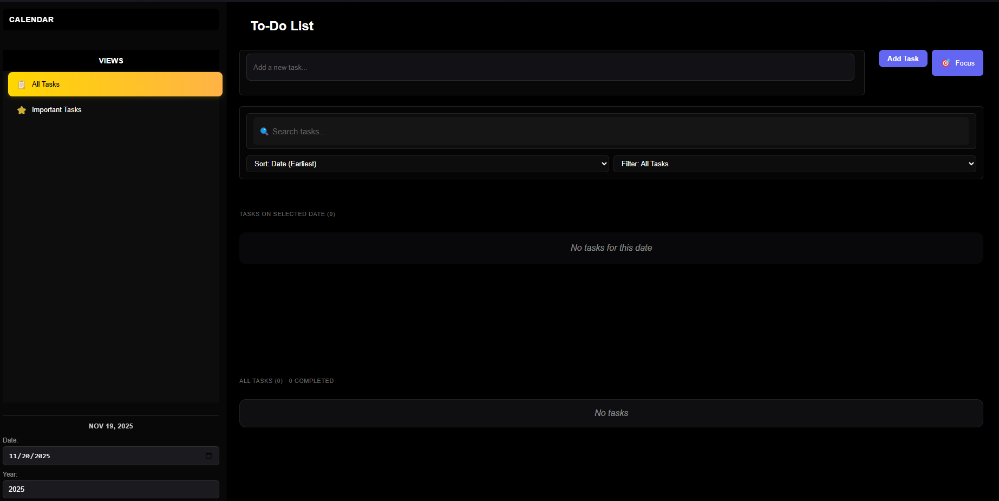
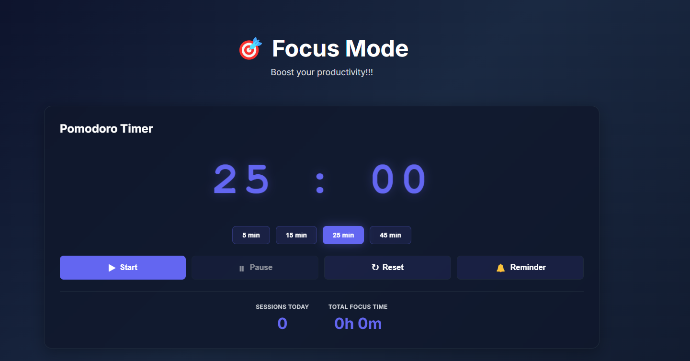
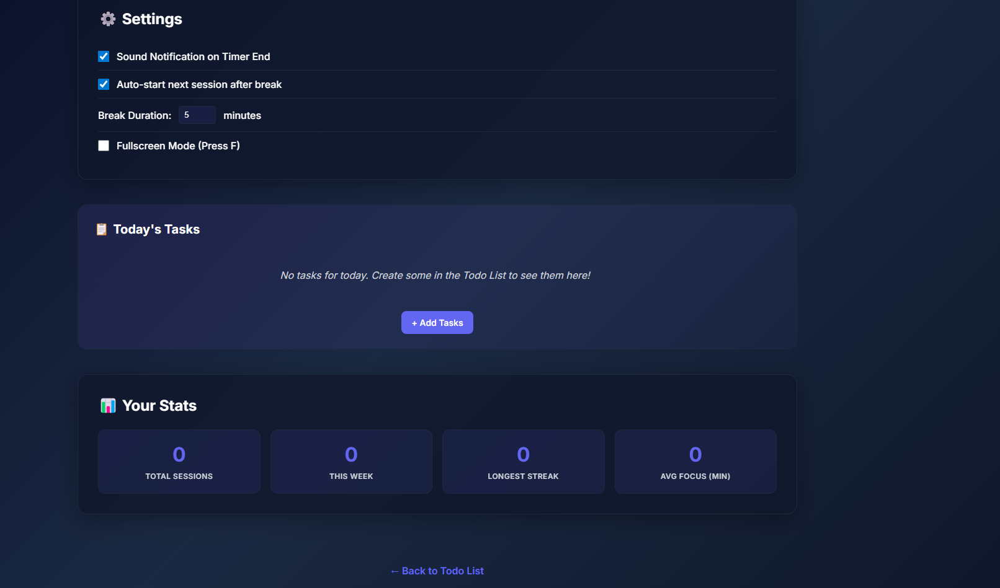
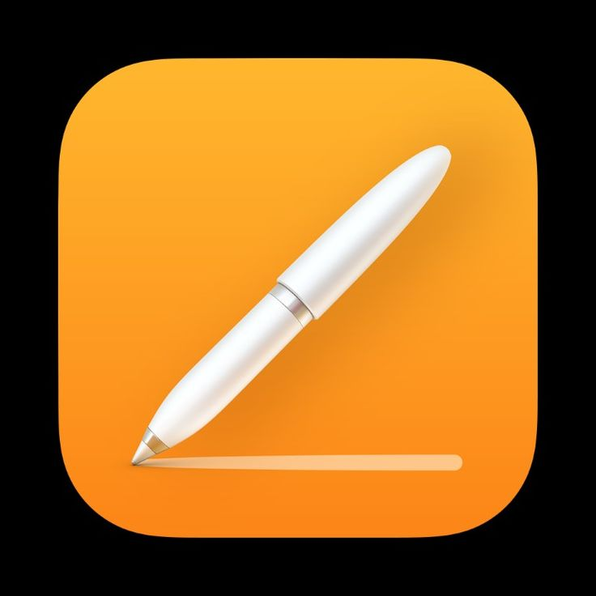
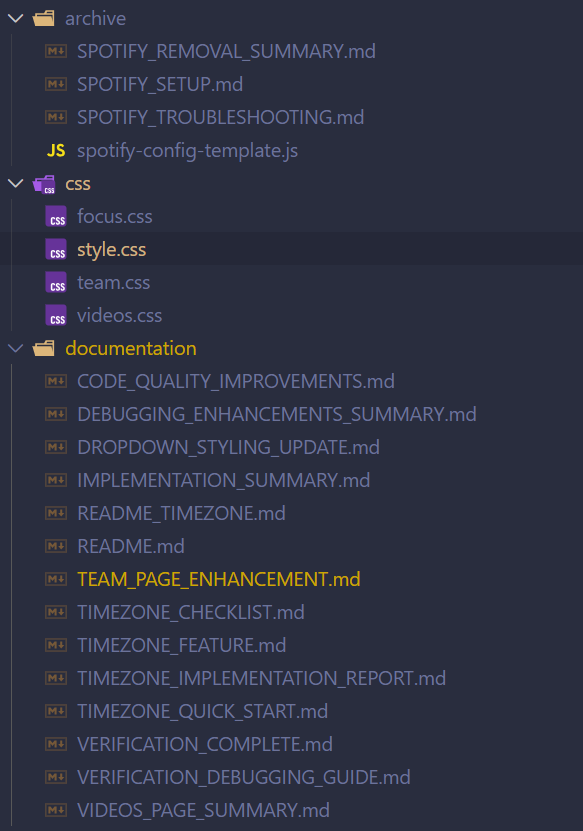
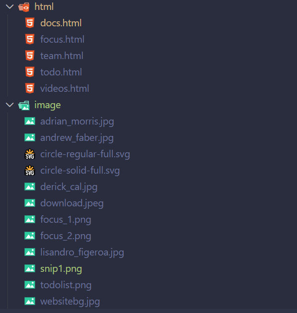
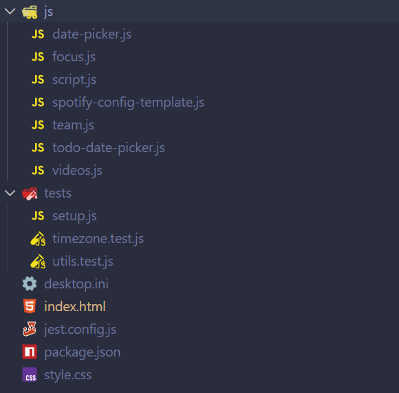

Project Documentation
Here you'll find our written report, source code, and presentation materials.
App Screenshots

Todo List App
Comprehensive task management with dates and priorities

Focus App - Timer
Pomodoro-style timer for productive work sessions

Focus App - Settings
Customizable timer settings and timezone options

Project Branding
Professional design and visual identity

App Interface - View 1
Key interface component and user interaction flow

App Interface - View 2
Enhanced feature showcase and layout design

App Interface - View 3
Advanced functionality and user experience details